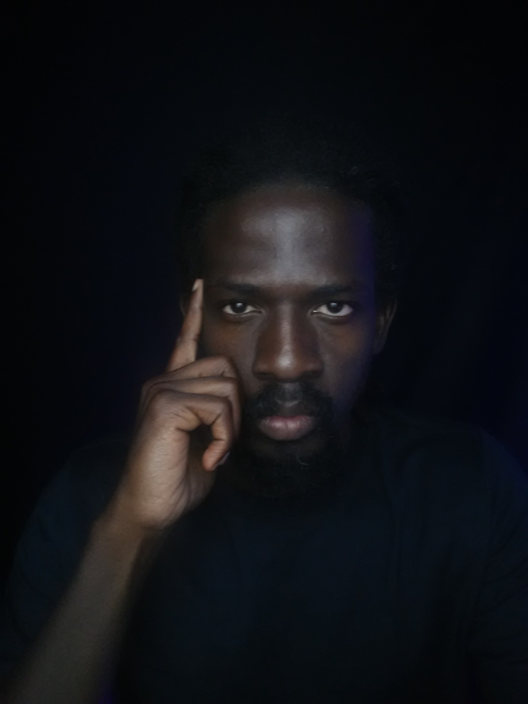

Dikanda do Reino do Kongo
Cultura digitalPlataforma cultural con archivo multimedia, biblioteca de 58 publicaciones, radionovela y contenido en tres idiomas.
WordPress / PHP / JavaScript / REST API
— Portifólio
Full Stack Developer / administración de sistemas

Desarrollador web Full Stack con 9 años de experiencia, principalmente con PHP y Laravel. Actualmente estoy orientando mi carrera hacia la infraestructura tecnológica y la administración de sistemas Linux.
Plataforma cultural con archivo multimedia, biblioteca de 58 publicaciones, radionovela y contenido en tres idiomas.
WordPress / PHP / JavaScript / REST API
Desarrollo y mantenimiento de sistemas para operaciones, fibra óptica y ventas.
PHP / Laravel / JavaScript / SQL
Soporte a aplicaciones Java Web, administración Linux e integración de datos científicos.
Linux / Java / Tomcat / rsync
2025–2026 Universidade de São Paulo / FAPESP
2017–2025 Finstar / ZAP — Full Stack Developer
2024–2025 ONGAIA / AIA — Desarrollo web
Email: nany.kuzola@usp.br
Telefone: +55 12 99 77 33 22 4
LinkedIn: nany-kuzola